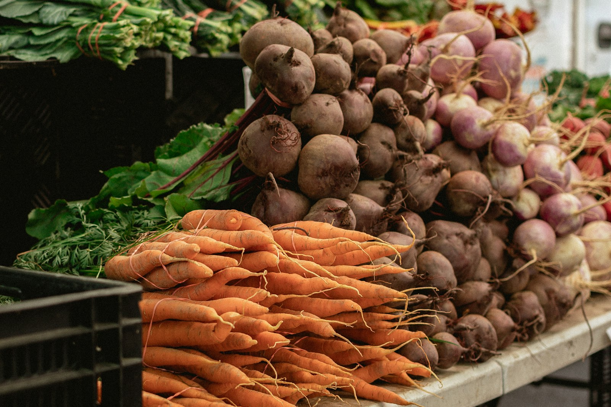

경매 시간표
경매는 03:00에 2경매장 채소부터 시작합니다. 1경매장 과일은 04:00부터입니다.
- 오늘
- 10월 15일 (목)
- 진행 중
- 배추 · 03:00~03:40
- 다음
- 03:40 무
오늘 시각 띠
1경매장 과일
- 사과04:00~05:00
- 배05:00~05:50
- 감귤05:50~06:30
- 단감06:30~07:10
- 포도07:10~07:40
- 재경매07:40~08:00
2경매장 채소
- 배추03:00~03:40진행 중
- 무03:40~04:10
- 대파04:10~04:40
- 애호박04:40~05:10
- 양파05:10~05:30
품목별 경매 시각
| 품목 | 경매장 | 오늘 시각 | 시작가 (상자) |
|---|---|---|---|
| 사과 (부사) | 1경매장 | 04:00~05:00 | 65,000원 |
| 배 (신고) | 1경매장 | 05:00~05:50 | 59,000원 |
| 감귤 (극조생) | 1경매장 | 05:50~06:30 | 16,000원 |
| 단감 (부유) | 1경매장 | 06:30~07:10 | 39,000원 |
| 포도 (캠벨얼리) | 1경매장 | 07:10~07:40 | 33,000원 |
| 복숭아 (백도) | 오늘 없음 | 출하 철 7 · 8월 | 없음 |
| 딸기 (설향) | 오늘 없음 | 출하 철 12 · 1 · 2 · 3 · 4월 | 없음 |
| 배추 (가을배추) | 2경매장 | 03:00~03:40 | 16,000원 |
| 무 (가을무) | 2경매장 | 03:40~04:10 | 24,000원 |
| 양파 (저장 양파) | 2경매장 | 05:10~05:30 | 32,000원 |
| 대파 (겨울대파) | 2경매장 | 04:10~04:40 | 33,000원 |
| 애호박 (시설 재배) | 2경매장 | 04:40~05:10 | 26,000원 |
요일별 운영
- 월요일~토요일
- 반입 00:00~02:30 · 경매 03:00~08:00
- 일요일
- 휴장 · 반입 없음
- 정산
- 경매 다음 날 14:00 · 토요일분은 월요일
- 재경매
- 07:40~08:00 · 유찰 품목만

유찰 · 재경매
- 유찰
- 하한가까지 누른 사람이 없을 때
- 재경매 시작가
- 첫 경매 하한가의 120 %
- 재경매 하한가
- 첫 경매 하한가의 80 %
- 재경매도 유찰
- 출하자 반송 또는 다음 날 첫 경매